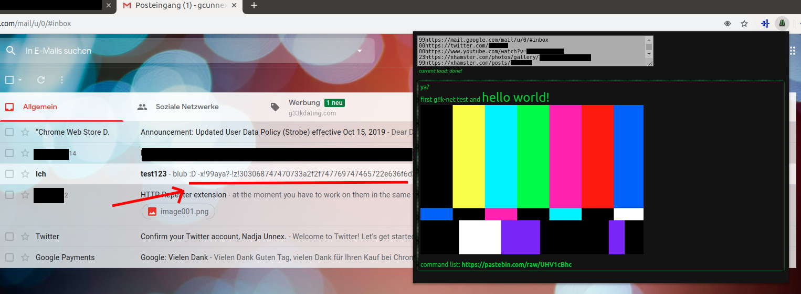

g!!k-net proof of concept (Alpha)
This website shall present the principle of g!!k-net and offer an example script for download.
With this "Proof-of-Concept", you can test out the features to full extend and can use the script in the wild.
What is g!!k-net?
In simple: g!!k-net is a "Network within a Network", but without isolating yourself from the main internet like that would be the case with intranets, VPN, TOR, etc.Different from an intranet, g!!k-net works within already existing internet resources and therefore does not require a specific server or such. Due to its nature, g!!k-net can exist and expand in -all parts- of the future and now present internet, like fore example intranets and TOR. To achieve this, g!!k-net writes within other structures in the internet. instead of having to create new network infrastructure or websites, you can simply write your part of the g!!k-net on already existing Websites, as comment under youtube videos, twitter posts, (etc.).
How to use g!!k-net?
At first you need a script that interprets the g!!k-net logic. You can get this here! First you download the associated chrome extension and then import it under chrome://extensions/ Then use the the test syntax to create a new g!!k-net page:
start block=-x!00a (any number using 2 chars)
link=-!n!00http://... (00=any number using 2 chars)
link=-!z!3030687474703a2f2f... (all not hex chars will be removed automatically) (3030=any hex-number using 2 chars)
exit=!e!
force linebreak=!x!
start text big=!b!
start text cursiv=!i!
start text underline=!u!
stop text big=!bx!
stop text cursiv=!ix!
stop text underline=!ux!
start text center=!u!
stop text center=!ux!
start text left=!l!
stop text left=!lx!
start text right=!r!
stop text right=!lr!
start big text=!h!
stop big text=!hx!
image=!im!http://...
image in hex=!iz!687474703a2f2f... (all not hex chars will be removed automatically)
Here is an example page: test
It is not important if the g!!k-net code is visible or not. The script detecs the sourcecode of the called page and looks in that for code which is understood by the g!!k-net interpreter. In the example link there schould be found "Block 27" (codeplace with number 27). Just click on that and it will show you your first g!!k-net test page!
Different Example (via Screenshot)

Here we had our entry to a special g!!k-net page via email subject that was accessed via google-mail webpanel.This g!!k-net example finalised out of different g!!k-net links that reached over youtube, twitter and xhamster.
To less explained?
This will be updated as soon as i find the time :D